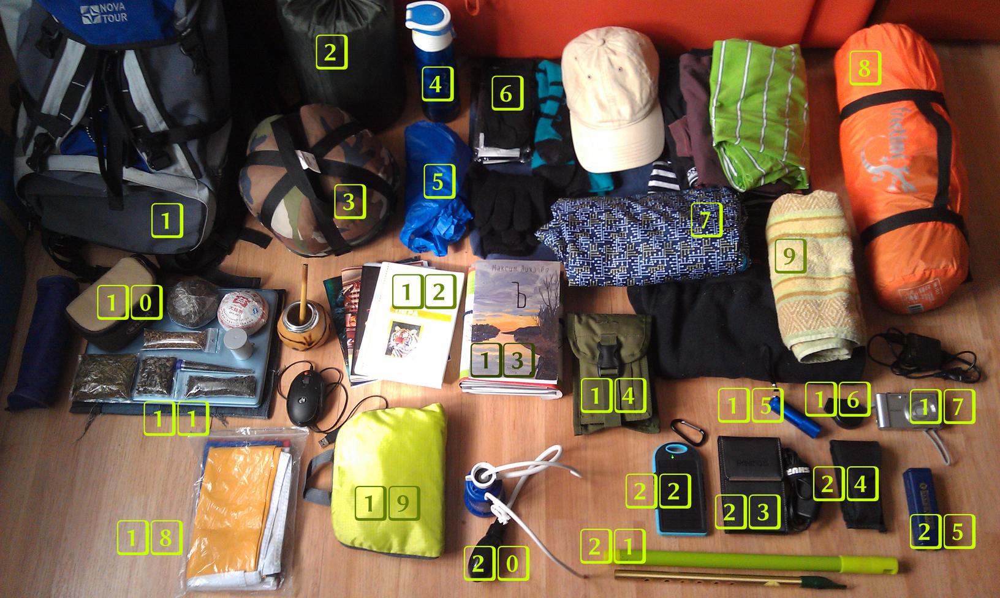
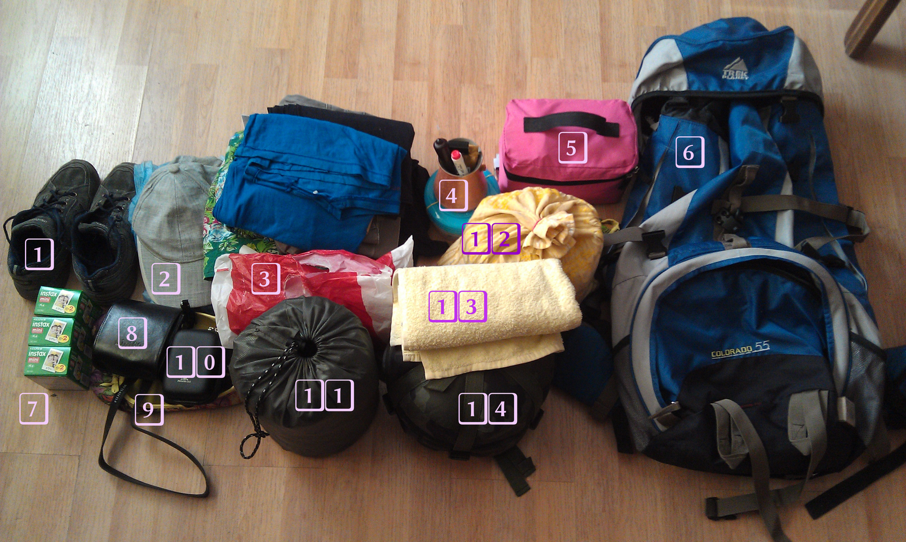
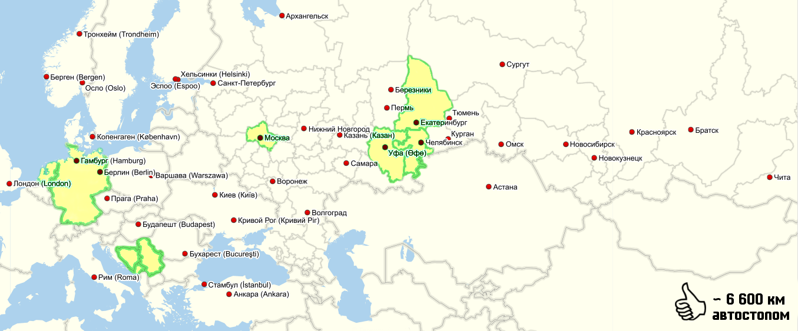

После многочисленных коротких и пары длинных поездок по Уралу и другим странам, мы решили отправиться в долгое и длинное автостопное путешествие, которое начнётся в Челябинске, но ещё не известно, где и когда завершится. Загадывать не станем. Пока же первая большая остановка – Крым, куда мы и отправляемся 4 апреля 2015 года.
Хочется подробно остановиться на снаряжении и вещах, чтобы впоследствии проанализировать, что оказалось избыточным, от чего мы избавились, а что дополнительно приобрели.
Первый рюкзак
{kind=link}
- Рюкзак NovaTour Canyon 60.
Самонадувающийся коврик Splav Surfing 3.Пользовались очень редко.- Спальный мешок в компрессионном мешке.
- Термос.
- Дождевик.
- Одежда
64 комплекта ежедневного белья.- Носки горнолыжные.
- Тельняшка.
- Толстовка.
- Джинсы.
- Кепка.
Штаны тёплые.Куртка.Шапка.Перчатки.
- Ветровка.
- Палатка Freetime ISIS DLX 2.
Полотенце.Чай, посуда для заваривания, калабас и мате.- Ноутбук.
- Тетрадь для записей, нотная тетрадь,
две книги (Евангелие от Фомы, Юлиус Эвола – «Оседлать тигра»). Сборники стихов, чтобы раздать в дороге.- Документы.
Фонарик.Фонарик есть в солнечной батарее.- Компас.
- Фотоаппарат Sony Cybershot.
- Флаги Российской Империи и Российской Федерации. Второй полезен для автостопа за границей, первый просто всегда со мной.
- Складывающийся рюкзак.
- Фильтр для воды. Вдруг придётся пить из луж?
- Висл в самодельном чехле, чтобы зарабатывать на завтраки.
- Аккумулятор с солнечной батареей. Дважды выручил меня в Нидерландах.
Навигатор.- Мультитул.
- Губная гармошка.
Дополнительно:
- Тактические кеды, в которых я поеду.
- 2 носовых платка.
- Коврик туристический.
- Газовая горелка (нужно купить газ, но это ближе к лету).
Котелок армейский.Отказались в пользу турки и горелки.- Столовые приборы.
- Спички.
- Табличка для записей и маркер.
Второй рюкзак (описание от первого лица)
{kind=link}
- Кроссовки, в которых я поеду.
- Кепка, а под ней – дождевик.
- Одежда:
- Бельё.
54 футболки.- Сарафан (Зачем? Скорее всего, он мне не понадобится, но я вот хочу).
- Тёплые леггинсы.
- Шорты.
- Купальник.
- Тельняшка.
- Штаны, в которых я поеду.
- Медная турка со съёмной ручкой и кофе.
- Большая косметичка, в которой:
- Мыльно-брильные принадлежности.
- Аптечка (в ней, в основном, таблетки от моей аллергии и пластырь).
- Кипятильник.
- Рюкзак Trek Planet Colorado 55.
- Картриджи для фотоаппарата.
- Фотоаппарат Fujifilm instax neoclassic.
- Балетки (Зачем?! Они лёгкие, не занимают места, альтернатива шлепкам – мы же когда-нибудь будем на море).
- Фотоаппарат (он уже был в списке Максима).
- Самонадувающийся коврик Splav Surfing 3.
- Мешок с едой (крупа, соя, быстрокаши, батончики мюсли и изюм. Много чая).
- Полотенце.
- Спальный мешок из Манараги в компрессионном мешке из Сплава.
Дополнительно:
- Тетрадь для записей снов и всего остального.
Рюкзаки в сборе
{kind=link}
Всего вещей без учёта еды: 108, из них 17 общих, 52 – Максим, 39 – Полина.
За время путешествия, которое должно быть достаточно долгим и протяжённым, снаряжение обязательно изменится; надеюсь, останется только самое необходимое.
У нас есть план поездок, но вряд ли следует его озвучивать полностью. Много интереснее будет сравнить карты посещённых городов, субъектов РФ, а то и стран (ну кто знает?) до и после этого путешествия.
{kind=link}